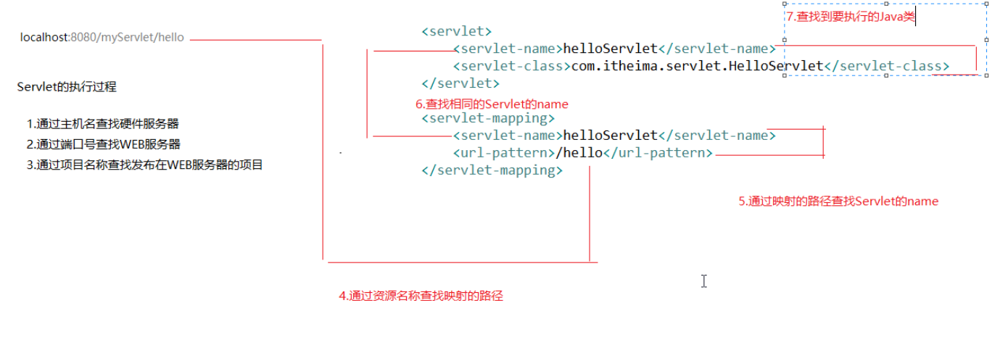
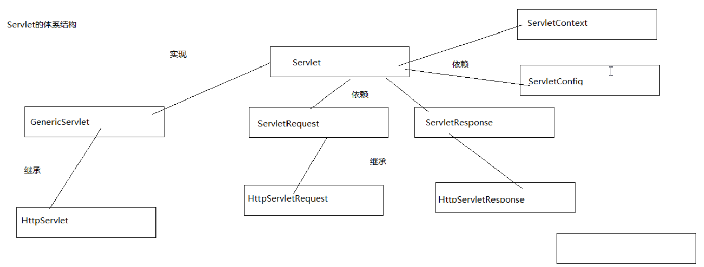

Servlet
Servlet的概述&入门案例
是Java所提供的一门用于开发动态WEB资源的技术，也是JavaEE的规范之一
开发步骤
1 | public class HelloServlet implements Servlet{ |
1 | <?xml version="1.0" encoding="UTF-8"?> |
Servlet的执行过程

Servlet的体系结构

使用Eclipse创建Servlet
1 | public void doGet(HttpServletRequest request, HttpServletResponse response) |
Serlvet的生命周期
- 出生
第一次使用浏览器访问Servlet时由WEB服务器创建对象
第一次访问Servlet是进行初始化，并动用方法init() - 活着
每次访问Servlet都会调用他的service方法 - 死亡
当WEB服务器关闭的时候会销毁Servlet的对象
当WEB服务器关闭的时候回调用destory()方法
Servlet的线程安全问题
如果有多个客户端并发的访问同一个Servlet，WEB服务器会为每一个哭护短的请求创建一个线程，在线程中调用Servlet的service方法，
如果多个线程并发的访问同样的数据，那这个时候就有可能会出现线程的安全问题。
解决方案
- 把有可能会出现问题的代码扔到同步代码块里
- 让Servlet去实现一个接口,SingleThreadModel
- 尽量减少使用成员变量
Servlet的一些配置细节
servlet-mapping
除了可以配置资源名称， 也可以进行路径的配置，而且路径可以有多层。
同一个Servlet我们可以配置对个映射路径
配置Servlet映射路径时可以使用通配符(*)，使用通配符只有两种格式：
*.拓展名，比如*.do
不能以正斜杠开头- 可以使用正斜杠开头，也需要使用
/*来结尾
不能再*后面加上扩展名
load-on-startup：参数为正整数：数越小，优先级越高
tomcat启动的时候直接创建Servlet的对象
ServletConfig的概述和测试
在Servlet的配置文件中，可以使用init-param标签可以为Servlet配置一些初始化参数，
可以使用ServletConfig对象来获取这些初始化参数
1 | <init-param> |
1 | /*private ServletConfig config; |
ServletContext概述&获取WEB应用的初始化
WEB服务器启动的时候，会为每一个WEB应用程序创建一个对应的ServletContext对象，他代表了当前的WEB应用，也称之为是WEB应用的上下文
作用
获取WEB应用的初始化参数
1 | <context-param> |
1 | @Override |
ServletContext实现数据的共享
让多个Servlet实现数据的共享，域对象
域对象，有范围的Map，让数据在整个应用所共享
注意：
每次重启都会刷新ServletContext对象，需要先运行Demo2进行设置参数，否则Demo3为null1
2
3
4
5
6
7
8
9
10
11
12
13
14
15
16public class ContextDemo2 extends HttpServlet {
@Override
protected void doGet(HttpServletRequest req, HttpServletResponse resp)
throws ServletException, IOException {
//获取ServletContext对象
ServletContext context = getServletContext();
//设置数据
context.setAttribute("username", "zhangsan");
context.setAttribute("username", "lisi");//覆盖
//获取数据
Object obj = context.getAttribute("username");
resp.getWriter().print(obj);
}
}
1 | public class ContextDemo3 extends HttpServlet { |
ServletContext的其他功能
获取当前WEB应用的绝对路径
1 | protected void doGet(HttpServletRequest req, HttpServletResponse resp) |
转发
- 将请求转发给另一个WEB资源，可以是Servlet，JSP，HTML
- 只能转发到内部资源
- 共享请求和响应对象
- 地址栏中的路径不会发生变化
- 在转发之后响应的内容会被取消
1 | @Override |
包含
- 用于在响应中包含其他的WEB资源
- 只能转发到内部资源
- 共享请求和响应对象
- 地址栏中的路径不会发生变化
- 包含前后可以继续的响应其他内容
1 | protected void doGet(HttpServletRequest req, HttpServletResponse resp) |
JavaWeb开发中常用的路径
绝对路径：
物理路径，在磁盘中的路径，以盘符开头
比如：D:\Tomcat7\apache-tomcat-7.0.88
相对路径：
不以盘符开头，相对于某个路径
不以正斜杠开头
直接写路径和资源名称
相对于当前路径，和当前WEB资源在同一个路径下
以正斜杠开头
服务器端
Servlet映射路径，转发路径和包含路径
正斜杠代表的当前WEB应用的跟路径
客户端
a,img,css
正斜杠代表的WEB服务器的跟路径，如果我们要访问某个应用下的WEB自己，需要手动的加上应用的名称。